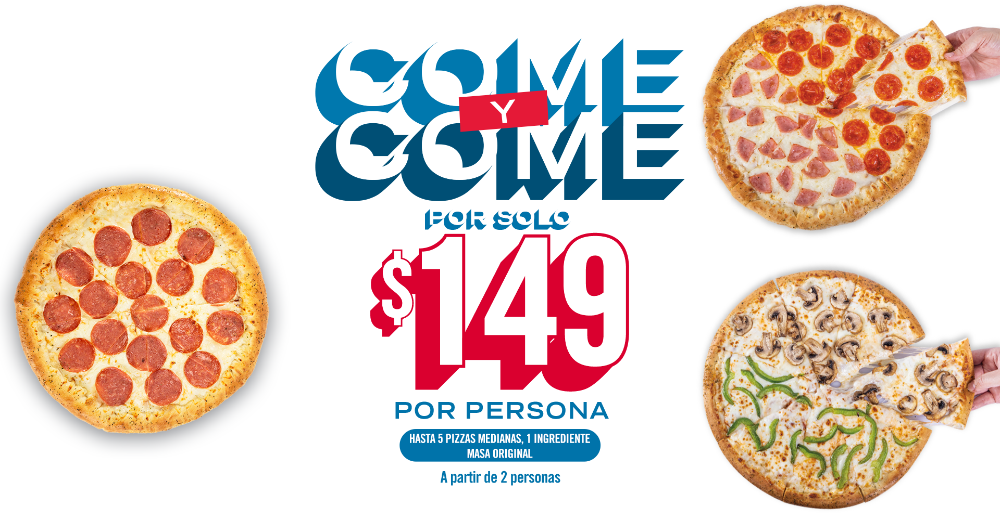

LUNES A DOMINGO DE 11 am A 11 pm
Operadora y Procesadora de Productos de Panificación, S.A de C.V., en Av. Revolución #1267 piso 21, Col. Alpes, Álvaro Obregón, CDMX, C.P. 01040; te ofrece la promoción: A partir de 2 personas, ordena en mostrador de 1 a 5 pizzas medianas (30cm) masa original de 1 ingrediente por solo $149 por persona, u ordena de 1 a 5 pizzas medianas (30cm) masa original de 2 a 9 ingredientes por $199 por persona, u ordena de 1 a 5 pizzas medianas (30 cm) masa premium (Sartén u Orilla Rellena de Queso) de 1 ingrediente por $199 por persona, u ordena de 1 a 5 pizzas medianas (30 cm) masa premium (Sartén u Orilla Rellena de Queso) de 2 a 9 ingredientes por $249 por persona. Esta promoción aplica únicamente al ordenar en mostrador y para consumo en tienda. No aplica en servicio a domicilio (teléfono, sitio web o App). Promoción válida a partir de dos personas o más, no aplica para una sola persona. Vigencia del 03 de junio al 31 de diciembre de 2024. Promoción valida únicamente en Tiendas Domino’s en las ciudades de Tlajomulco, Tlajomulco de Zuñiga, Tlaquepaque, Guadalajara, Zapopan y Tonalá, excepto en las siguientes tiendas: 11237 Walmart, 11253 Guadalajara Plaza Lomas, 11959 Guadalajara Centro, 11481 Javier Mina y 12377 Plaza Tesistán. Solo puedes pedir hasta 5 pizzas. El cliente debe terminarse su pizza para poder ordenar la siguiente pizza, no se puede tener pizza en el lugar / mesa. La promoción no se puede compartir. Solo se podrá elegir una opción de masa y número de ingredientes por persona, no se pueden combinar. El sobrante de la pizza no puede pedirse para llevar. El consumo de las 5 pizzas debe de realizarse en un máximo de 90 minutos previo al cierre de la tienda; posterior a este tiempo, no se podrá ordenar ninguna pizza adicional conforme a esta promoción. Los niños con una estatura por debajo de 1.20 metros son gratis, aplica un niño por cada 2 adultos. Sujeto a disponibilidad de producto en tienda. Aplica únicamente en las tiendas, el tipo de pizzas, tamaños e ingredientes señalados; no aplica en otras tiendas, tamaños, ni tipos de pizza, ni masas e ingredientes no mencionados. No aplica con otras promociones, cupones ni descuentos. Precios en MXN. Nuestros precios incluyen IVA. HAZ EJERCICIO.